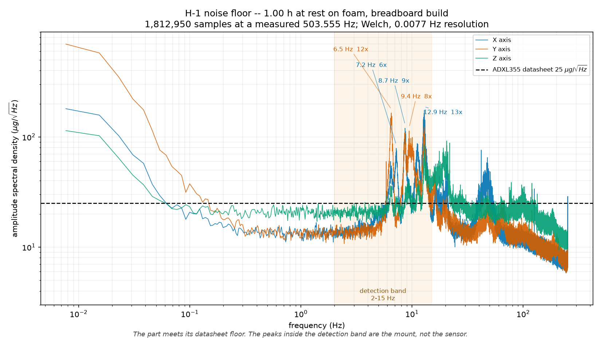
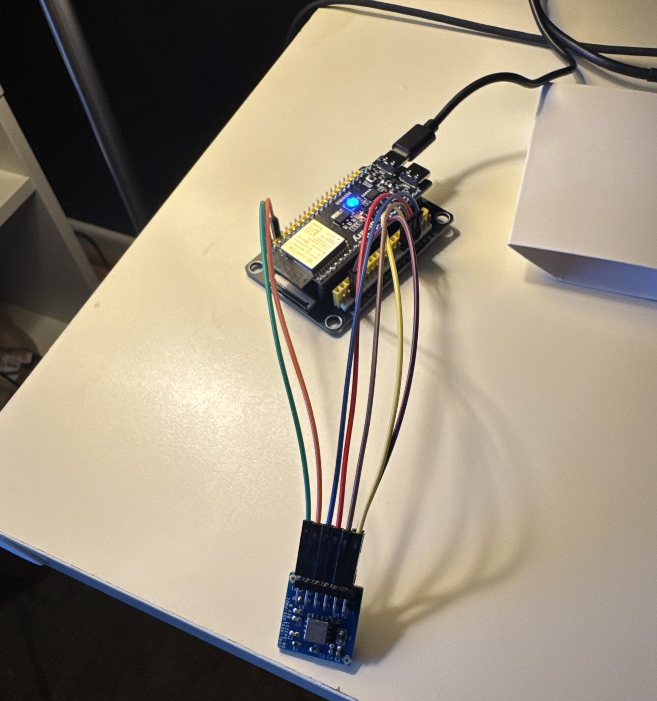

Lab notebook
What I did, and when
A sentence on how this page works: newest entries at the top? Does it mirror your physical Data Book?
-
Mounting diagnosis and the Corpus 2 field protocol
hardwarefield- What did the mount diagnosis show about the peaks in the H-1 noise floor?
- You tested the claim that jumper wires add electrical noise. What did you find?
- What is Corpus 2, and how will you collect it?
-
Capture firmware, a live scope, and Test H-1 (noise floor)
hardwareH-1 recorded- What does the FIFO capture firmware do?
- How did you run H-1 (1 hour at rest on foam), and what did the noise floor look like next to the datasheet?
- The +1.28% scale error from H-2: could it be offset rather than sensitivity? How would you tell?

Test H-1 noise floor. More on the Results page. -
Reading the prior art
reading- Which papers did you read in full?
- What is the closest existing work (LightEQ), and how is your project different?
-
First hardware: sensor bring-up and Test H-2 (gravity)
hardwarebring-up passedH-2 passed- The bring-up gate: the ADXL355 identified over SPI, 18 of 18 reads. What were you checking, and why does it come first?
- H-2: turning the sensor to reach all six gravity extremes. What does that prove?
- What surprised you about the board?

The first bench setup. -
Adaptive thresholds (CFAR)
resultsThis was your idea. Explain it: why does a threshold calibrated on one sensor fail on another, and how does a self-calibrating threshold fix that without labelled earthquakes? -
First multi-seed results on public data
modelresults- What is the "domain ladder" (STEAD → PNW → PNW Accelerometers)?
- What happened to false alarms as you moved down the ladder?
- How did PhaseNet and EQTransformer do on the same test?
-
Building the data pipeline
data- Why can't you use STEAD's own train/test split? (Leakage!)
- Why must preprocessing be causal, i.e.
sosfiltrather thansosfiltfilt? - How did you design the training labels?
-
Project set-up and choosing the architecture
designWhy did you pick a streaming dilated TCN? What else did you consider and reject?